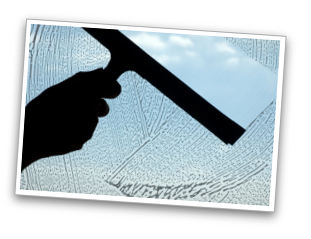

<div id="features">
    <div class="container">
        <div class="row header">
            <div class="col-md-12">
                <h2>Lo-Fa-Rén vinduespolering</h2>
                <p>Information om den vinduespolering LoFaRen tilbyder deres kunder.</p>
            </div>
        </div>
        <div class="row feature">
            <div class="col-md-6 info">
                <h4>Vort oprindelige engagement</h4>
                <p>
Vores vinduespudsningsafdeling er den oprindelige del af firmaet, som startede i 1964. I år 2001 overtog LoFaRen en nyere vinduespudserforretning. Vi har i 2014 indgået samarbejde med Egeberg Polering som varetager vinduespolering fremadrettet.
</p>

<p>
Kontakt Egeberg Polering for et uvildigt tilbud på pudsning af netop jeres vinduer. Telefon 40 33 51 31.
</p>
            </div>
            <div class="col-md-6 image">

                
            </div>
        </div>
        <div class="row feature">
            <div class="col-md-12 info">
                <h4>Renovering og pleje af træ- og linoleumsgulve</h4>
                <p>
                    Afrensning og opskuring, Genopbygning, Oliering, Ludbehandling eller behandling med voks, Pleje
Alt arbejde udføres professionelt med nye maskiner.
Ring gerne og høre mere om mulighederne og procedurene for netop jeres gulve.                   
                </p>
            </div>
        </div>
        
    </div>
</div>


